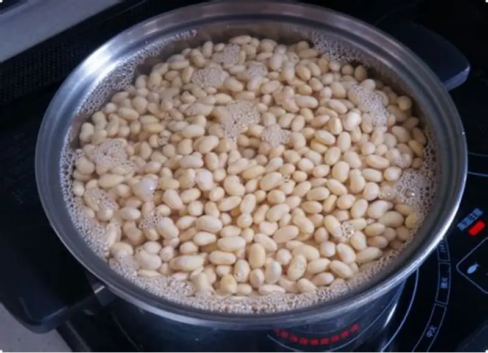
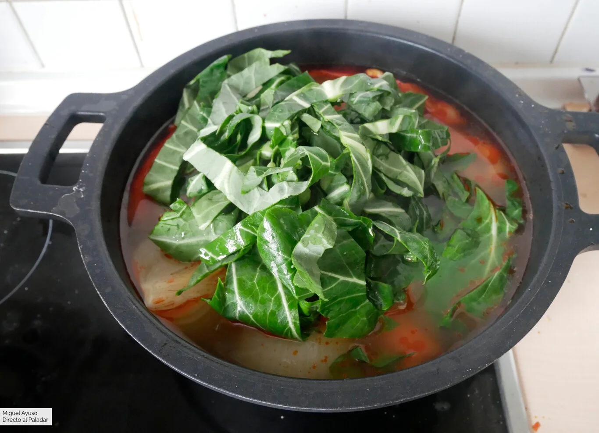
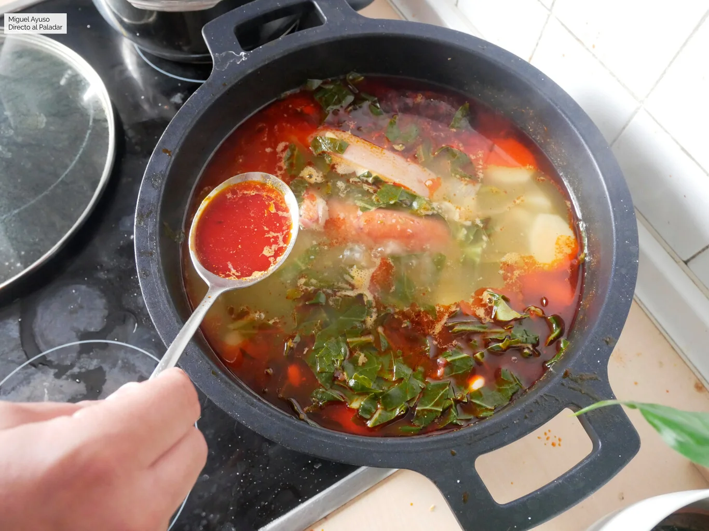

El cocido montañés es uno de los platos más emblemáticos de Cantabria, con raíces profundas en la tradición rural.
Elaborado con alubias blancas y berza, acompañado de carnes como costilla, panceta y chorizo, es un plato contundente que refleja la identidad gastronómica de la región.
Su preparación requiere tiempo y paciencia, pero el resultado es un sabor inconfundible que ha pasado de generación en generación.
Hoy en día, el cocido montañés se sirve tanto en hogares como en restaurantes, siendo un símbolo de hospitalidad y tradición.
La receta tradicional se transmite oralmente, con cada familia aportando su toque personal. Algunas prefieren añadir morcilla, otras potencian el sabor con un sofrito previo.
El secreto está en la cocción lenta, que permite que las alubias absorban los aromas de las carnes y la berza, creando un caldo espeso y lleno de matices.
Más allá de la gastronomía, el cocido montañés representa un momento de encuentro. Reunir a la familia alrededor de la mesa para compartir este plato es una tradición que refuerza los lazos comunitarios.
En festivales y jornadas gastronómicas, como esta, el cocido se convierte en protagonista, mostrando al mundo la riqueza cultural y culinaria de Cantabria.
Tres claves del cocido
- 1 Alubias de calidad y bien cocidas
- 2 Berza fresca y tierna
- 3 Carnes curadas con sabor auténtico
Pasos de la receta
-

Remojar las alubias la noche anterior en abundante agua fría. Esto asegura que se ablanden y se cuezan de manera uniforme.
-

Cocer las alubias junto con la berza en una cazuela grande, a fuego lento, durante 90 minutos para que los sabores se integren desde el inicio.
-

Añadir las carnes (costilla, panceta, chorizo) y dejar cocinar lentamente durante media hora, removiendo de vez en cuando.
-

Rectificar de sal y servir bien caliente. El resultado es un plato contundente y lleno de sabor.